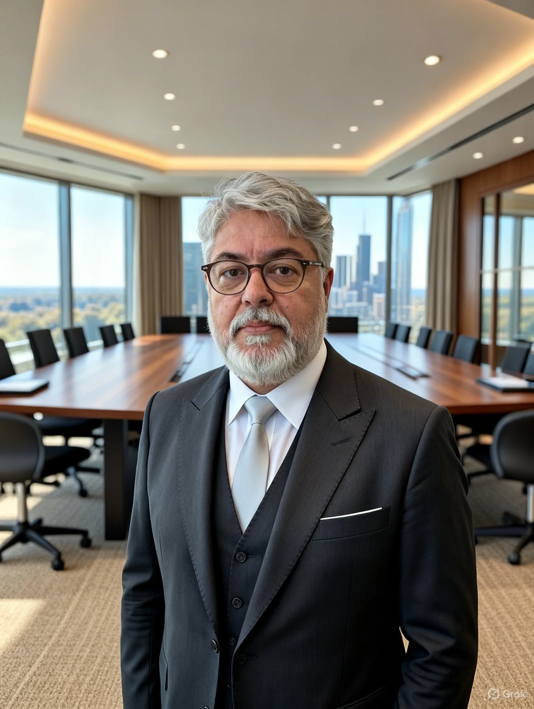

A CERNE não nasceu numa sala de reunião. Nasceu da soma de três trajetórias reais — cada uma com suas próprias marcas, aprendizados e a certeza de que crescimento sem estrutura não sustenta nada.

M.Sc. em Marketing Digital e Analytics, PMP® certificado e mais de 30 anos transformando desafios complexos em resultados mensuráveis. André passou por Equinix, HPE, TJRJ e LIGHT — e carrega na bagagem um número que diz tudo: 95%+ de taxa de sucesso em programas de alta complexidade. Professor de Dados e Power BI no Firjan Senai Maracanã, ele acredita que tecnologia sem estratégia é apenas ferramenta. Na CERNE, é quem garante que o diagnóstico precede qualquer solução.
Profissional da área financeira com experiência em controladoria, contas a pagar e contas a receber, orçamento, fluxo de caixa e análise de indicadores, apoiando a tomada de decisões estratégicas. Formação superior completa e pós-graduação em Controladoria e Finanças, com domínio de Excel avançado, Power BI e SAP. Vivência em gestão de contratos, compras, fornecedores, conciliações financeiras e suporte a auditorias, com perfil analítico, organizado e orientado a resultados.
Formado em Gestão da Cadeia de Suprimentos e Logística pela Unigranrio, Felipe traz o que poucos consultores têm: entendimento real de como as operações funcionam no nível da execução. É quem sabe que processos falham não no papel, mas na prática — e que uma cadeia bem gerida é o cerne de qualquer negócio que queira crescer de verdade.
Onde a visão estratégica se torna governança corporativa e direção para todo o grupo.
Frente educacional focada em transmutar conhecimento estratégico em poder operacional para líderes.
Consultoria de alta precisão que estruturamos para suportar crescimentos extraordinários.
Marca de vestuário técnico unindo design e logística integrada pela Reserva Ink.
Implementação completa de presença digital e infraestrutura de rede para medicina especializada.